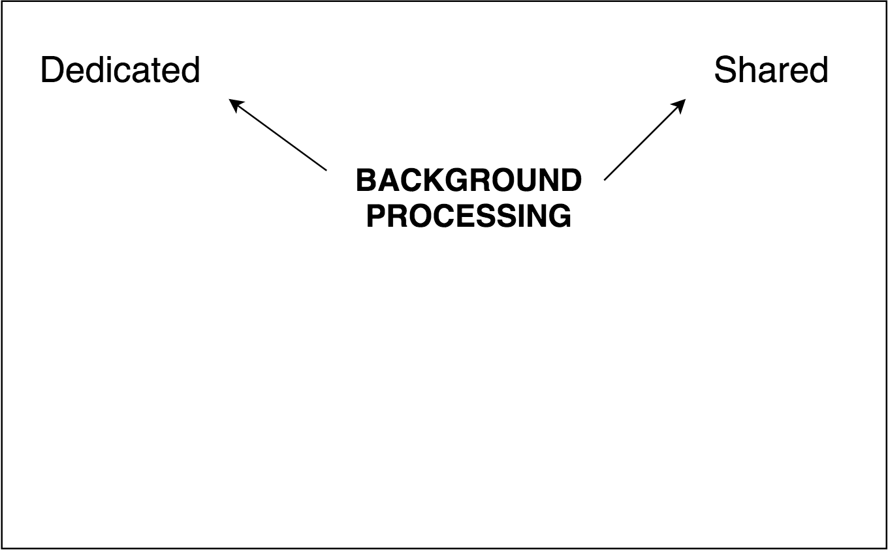

Service Workers
Awwww yisssss
A Service Worker is an event-driven
web worker that enables apps to make use of persistent background processing and provide usable offline experiences.
A Service Worker is an event-driven
web worker that enables apps to make use of persistent background processing and provide usable offline experiences.
What can we do with the Service Worker API?
- offlining applications
- push notifications
- background data sync
A Service Worker is an event-driven
web worker that enables apps to make use of persistent background processing and provide usable offline experiences.
Workers
Workers
Workers

Workers
Workers
A Service Worker is an event-driven
web worker that enables apps to make use of persistent background processing and provide usable offline experiences.
event-driven service workers...
- are activated and kept alive by their relationship to events - not documents
- are consulted whenever navigations (network events) occur within the origin it is registered on
- can receive request events & modify their responses to override defaults
...it's kinda like you're running a
proxy server on the client o_O
Links & Resources
Service workers spec on github
Service workers draft spec
MDN Using Service workers
Is Service workers Ready
Service workers demos
Serviceworkerware
Offliner
irc.mozilla.org #content